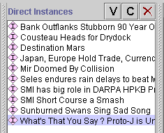
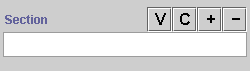
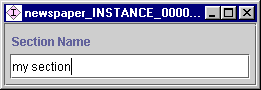

Creating an Instance
From a Field
Creating an Instance
From a Field

You can create an instance from any Instance field in the Instances
Form. Creating an instance from an Instance field creates the instance in
one of the Allowed
Classes for the slot associated with the field.
To create a new instance from an Instance field:
- In the Class Pane at
the Instances Tab,
highlight a class which has a slot of type Instance. For
example, to create an instance for the class Section, you could
select the Article class, which has a Section slot.
- In the Direct Instances Pane,
select an instance.

- In the Instances Form, go
to the field for the Instance slot. Here is the field for the slot Section:

- Click the Create
 button at the top right of the field. If there is more than one Allowed
Class for the slot, a Select Concrete CIs dialog box is displayed.
Select the class you want and click OK.
button at the top right of the field. If there is more than one Allowed
Class for the slot, a Select Concrete CIs dialog box is displayed.
Select the class you want and click OK.
If there is only one Allowed
Class, you can skip this step.
- An Instances Form will
appear for the new instance. It will have a default name, such as
project_INSTANCE_00001.

- Use the Instances Form to
fill in the slots for the instance.
- The new instance is added as a slot value for the instance
you selected in step 2.
- To view the instance, you can select the class it appears
in in the Class Pane at the Instances
Tab. The new instance then appears in the Direct
Instances Pane for that class.
Note: The slot value is a reference to the selected
instance. This means that if you edit the instance in any location, the
changes will appear in all the locations where it is referenced.
You can also create an instance by clicking the Create
instance button at the top of the Direct
Instances Pane. See Creating an
Instance Directly for more information.
Next: Viewing an
Instance
Instances Table of Contents